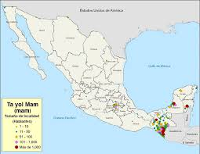
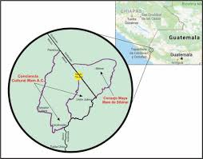
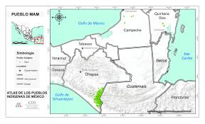

El Ta Yol Mam Genéticamente es una lengua perteneciente a la familia maya a la subfamilia mameana.
Esta lengua tiene un riesgo mediano de desaparición,
tiene cinco variantes, actualmente está distribuida en 21 Municipios de Chiapas.
El Censo General de Población de 2020 informa de 11,369 hablantes.
El territorio Ta Yol Mam en la República Mexicana se ubica en tres entidades federativas:
se habla en los estados de Chiapas, Campeche y Quintana Roo. En el último censo realizado por INEGI en 2020,
se registraron 11,369 hablantes El grupo mayoritario de Hablantes de la Lengua Ta Yol Mam se encuentra ubicado en Guatemala,
con un poco más de un millón de hablantes.
| |
|
|
|  | Plebeya $250 | |
|  | Cueitl $150 | |
|  | Huipil $200 |
La Norma de Escritura de la Lengua Mam consta de un alfabeto y de reglas ortográficas
consensuadas por los hablantes de la misma, el documento es el resultado del trabajo colaborativo de tres años
en donde el Instituto Nacional de Lenguas Indígenas brindó asesorías, acompañamiento y apoyo para la construcción de la norma.
El INALI inició los procesos de normalización de la lengua Ta Yol Man desde el año 2009, terminando con la impresión de la
Norma de escritura de la lengua Ta Yol Mam en 2011.
QUINTANA MARTÍNEZ ORLANDO 2IV4